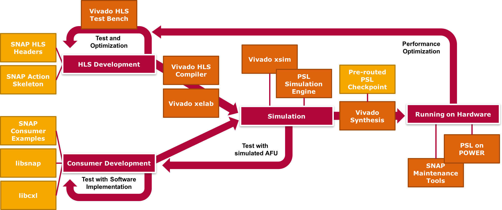

What is SNAP?
As much as CAPI builds the technical foundations for effectively using accelerators, it can be hard to adopt due to various reasons:
- Having to write hardware code (Verilog / VHDL) and switching from procedural to state-based thinking may be hard for software engineers
- Many different components that have to be managed individually are part of the build, simulation and execution process
- The API leaves a lot of responsibility for the user - for example waiting for the completion of memory reads and writes
Therefore SNAP, which is build on top of CAPI, aims to make it as easy as possible to use FPGA-based hardware acceleration. It does that by providing two things: a unified, automated build process and a simpler API on top of CAPI.
Build parts
The SNAP framework defines a unified build process for building, simulation and execution on hardware.

Overview about artifacts and tools/components involved in the lifecycle of a SNAP AFU
Combining Xilinx Vivado with various other tools and components
While Xilinx Vivado is used to synthesize and layout the action for the FPGA or simulation, there are also many external components that are needed for building. This includes the information which action to build and the PSL layouted for the target FPGA. SNAP bundles all neccessary files and settings while providing a structure of Makefiles to automate building based on them.
High Level Synthesis support
Incorporating Vivado HLS into the build process allows the action behavior to also be specified in C or C++ which automatically gets converted to hardware code. Even though it is not possible to completely abstract from thinking about pipelining and parallelization, it removes the need for developers to learn VHDL or Verilog.
Ready-to-run examples
SNAP contains various examples with test data that can be simulated or run on a real device. They help to learn the build flow and act as a stepping stone to creating own actions. A list of the available example actions can be found in the SNAP repository.
Framework part
SNAP also tries to abstract from the low level view of CAPI where it is possible without performance impacts.
Simpler API
This includes providing a simpler API for the interaction with the FPGA. When calling an action in CAPI the wait for completion has to be implemented by the caller on the host. In SNAP, the action is prepared by creating a job with a filled parameter struct and then called via the blocking call snap_action_sync_execute_job(action, &job, timeout);
Unified memory access
The FPGA can access different kinds of memory: the host memory as well as its own DRAM and NVMe (i.e. SSD) storage. All are connected via AXI-Buses and can be accessed in the same way. In contrast to CAPI, reading or writing memory does require manually checking when the IO-task is finished.